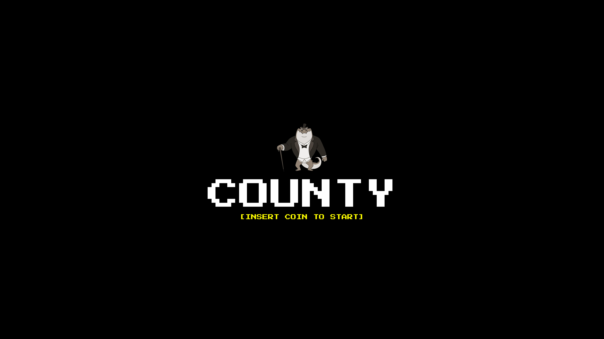
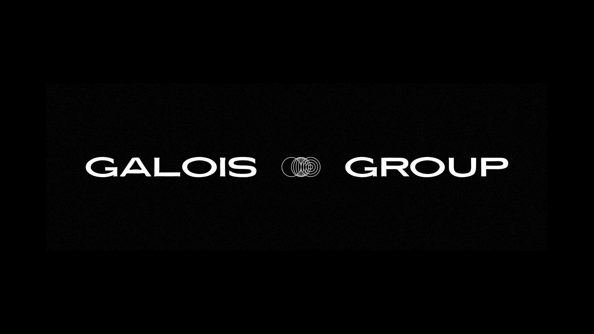
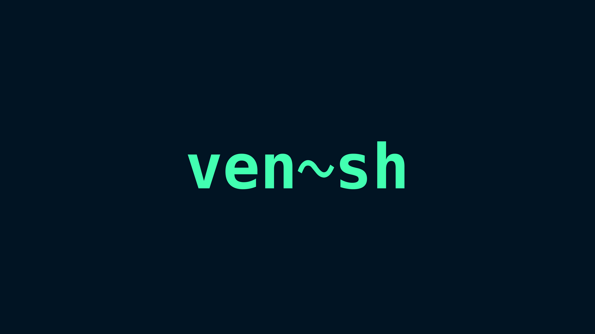

Hi , my name is Gregory.
I enjoy making software and look to craft accessible, intuitive, and pleasing user interfaces.
I’m currently studying Computer Science at the Singapore University of Technology and Design.
I go by @glimeuxe online.

County
As part of our coursework for 50.002 Computation Structures, we made an FPGA-based game where two players compete to accurately count crossing animals.

Galois Group
As Publicity Director, I crafted publicity messages and posters to promote events and establish an identity for the club. Posters were designed with a consistent dark design language that borrows from the Monopo art style.

venshell
A simple, light-weight shell program designed for POSIX-compliant operating systems, originally designed for a school project.

Rhytra
A falling-note rhythm game. Inspired by Piano Tiles and osu!mania, this game challenges players to press keys in sync with the descent of note blocks along a designated line.


50Arches
A functional, life-sized prototype for an interactively light-able bridge archway. Our goal was to design an interactive and sustainable lighting solution for the Changi Business Park Garden, in order to make it feel more welcoming, comfortable, and engaging. The LED strips on each arch emit warm ambient light by default, and users may physically interact with the windchimes hanging from each arch to trigger a unique “ripple” lighting effect.

EmmyAI
An AI character designed to entertain in life-like ways. Full features include speech-to-text built on OpenAI's Whisper model, responses generated by a fine-tuned version of OpenAI's Curie LLM, text-to-speech built on Microsoft Azure's Ashley speech synthesis model, and live animations generated by VTube Studio.

Posties
A sandbox environment made to demonstrate 2D movement and collision for a playable character.

MinuteTab
A modern, distraction-free new tab page. With high-quality background images selected at random upon every page refresh, this page focuses solely on cleanly and elegantly displaying the local time.